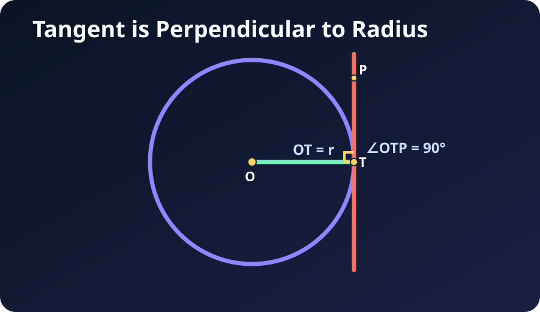

Hero first
Use a bold diagrammatic hero so circle geometry feels visual instead of abstract.
Stage 2 Prototype
This version keeps the visual artefacts at the centre while already including theme controls, a lightweight GeoBot widget, and a privacy banner carried over from the earlier build.
Artefact Set



Design Notes
Use a bold diagrammatic hero so circle geometry feels visual instead of abstract.
Keep theorem explanation compact and image-led so students can scan quickly.
Theme, font, contrast, chatbot entry, and privacy notice already stay visible in this prototype.
Supporting pages and deeper homepage content are deferred to the fuller v3 implementation.
Core Rules
An angle subtended by a diameter is always 90 degrees.
Opposite angles in a cyclic quadrilateral add up to 180 degrees.
The radius at the point of contact is perpendicular to the tangent.
Equal chords are the same distance from the centre.